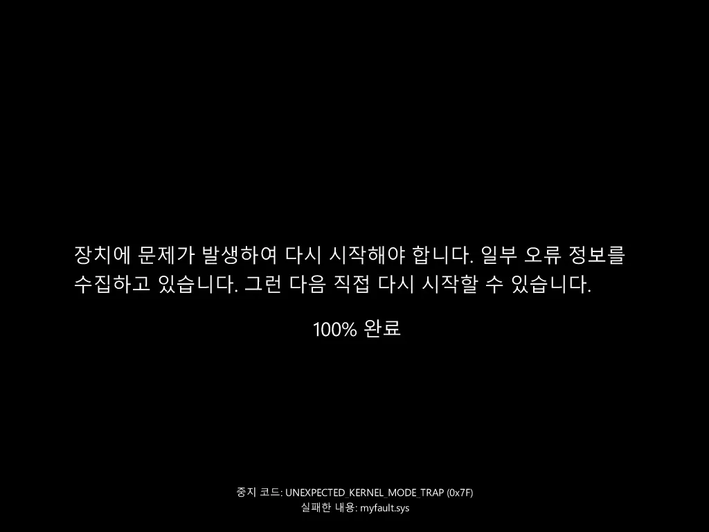

에러 코드 상세
0x0000007F · UNEXPECTED_KERNEL_MODE_TRAP
커널이 잡지 못한 CPU 트랩이 발생했을 때 나오는 코드입니다. 첫 번째 매개변수가 트랩 번호이며, 가장 흔한 트랩은 0 나누기, 오버플로, 경계 검사, 잘못된 명령, 이중 오류입니다.
Windows 11 26H2에서는 이 오류가 아래와 같은 검은 화면으로 나타납니다. 하단의 "중지 코드"와 "실패한 내용"(원인 드라이버 파일 이름)을 함께 기록해 두세요. 아래는 테스트용 가상 머신에서 Sysinternals NotMyFault로 일부러 일으킨 화면이라 실패한 내용에 이 도구의 드라이버(myfault.sys)가 표시되었으며, 실제 장애에서는 원인이 된 드라이버 파일 이름이 나옵니다. 이 화면은 소프트웨어(드라이버) 결함으로 일으킨 사례이므로, 같은 코드가 메모리·오버클럭 때문에 나는 경우와는 원인이 다를 수 있습니다.

이 코드를 어떻게 해석해야 하나요?
블루스크린에 표시되는 첫 번째 매개변수가 트랩 번호입니다. Microsoft Learn이 드는 흔한 번호는 0 나누기 오류(메모리 손상, 다른 하드웨어 문제, 소프트웨어 실패가 원인일 수 있음), 오버플로, 경계 검사 오류, 잘못된 명령(명령 포인터가 손상된 경우이고 가장 흔한 원인은 하드웨어 메모리 손상), 이중 오류입니다. 이중 오류의 흔한 원인은 두 가지로, 커널 스택 오버플로(보호 페이지에 닿은 뒤 트랩 프레임을 넣으려다 스택이 없어서)와 하드웨어 문제입니다. 덜 흔한 트랩으로 디버거 호출, 중단점, 잘못된 TSS, 세그먼트 없음, 스택 오류, 일반 보호 오류(GP_FAULT), 정렬 검사 등이 있습니다.
이 코드가 가리키는 것
원인 후보(문서 설명 기준): 메모리 손상, 다른 하드웨어 문제, 소프트웨어 실패(0 나누기 트랩); 하드웨어 메모리 손상으로 명령 포인터가 손상된 경우(잘못된 명령 트랩의 가장 흔한 원인); 커널 스택 오버플로(이중 오류의 흔한 원인); 하드웨어 문제(이중 오류의 또 다른 흔한 원인).
첫 점검 항목
- 공식 문서가 알려 주는 것: 블루스크린의 첫 번째 값(트랩 번호)을 기록하세요. 0은 0 나누기, 6은 잘못된 명령, 8은 이중 오류 같은 식으로 문서가 번호별 의미와 원인을 설명합니다.
- 공식 문서가 알려 주는 것: 이중 오류라면 하드웨어 문제를 가능성으로 보고 하드웨어 진단과 메모리 검사를 하세요. 메모리 손상은 여러 트랩의 공통 원인으로 문서에 나옵니다.
- 문서 외 일반 점검: 메모리 진단 도구(mdsched.exe 또는 MemTest86+)로 램을 점검하고, XMP·EXPO와 오버클럭을 기본값으로 되돌려 보세요.
- 문서 외 일반 점검: 최근 추가한 하드웨어(사운드카드 등)와 그 드라이버를 제거하거나 최신으로 재설치하고, 온도와 전원도 점검하세요.
이 오류와 가까운 증상은 질문에 답하며 해볼 것을 한 단계씩 따라 할 수 있습니다. 준비물과 자세한 방법을 보여 주고, 직접 하기 어려우면 문의로 이어집니다. 메모리 의심 블루스크린 자가진단 시작하기 →
확인 결과에 따른 다음 단계
- 메모리 진단에서 오류가 나올 때 — 문서가 여러 트랩의 원인으로 하드웨어 메모리 손상을 듭니다. 램 모듈을 하나씩 꽂아 불량 모듈을 가려내세요. 모듈 분리는 문서 외 일반 조치입니다.
- 최근 추가한 장치의 드라이버를 재설치하면 사라질 때 — 그 드라이버를 제조사 최신 버전으로 유지하세요. 이 사이트에는 새로 추가한 사운드카드 드라이버 재설치로 해결된 사례가 있지만 문서가 안내하는 방법은 아닙니다.
- 트랩 번호가 이중 오류(8)일 때 — 문서는 커널 스택 오버플로와 하드웨어 문제를 흔한 원인으로 듭니다. 스택 오버플로는 드라이버 코드 문제이므로 최근 설치한 드라이버를 제거해 보고, 반복되면 하드웨어를 점검하세요.
데이터와 시스템을 보호하는 주의사항
원인이 분명하지 않은데 초기화·레지스트리 수정·시스템 파일 교체 같은 조치를 먼저 시도하면 오히려 문제가 커질 수 있습니다.
앞 단계로 해결되지 않을 때
동일한 코드가 계속 나타난다면 이벤트 로그와 장치 상태를 남겨두고, 코드가 매번 바뀐다면 메모리·전원·온도 등 시스템 전반의 안정성을 점검하세요.
복구, 초기화, 드라이버 제거처럼 되돌리기 어려운 작업 전에는 중요한 파일을 다른 물리 저장장치나 신뢰할 수 있는 백업 위치에 보관하세요.
공식 참고자료
자주 묻는 질문
- 블루스크린 첫 번째 값은 무엇인가요? 트랩 번호입니다. 문서는 0 나누기 오류, 오버플로, 경계 검사 오류, 잘못된 명령, 이중 오류를 가장 흔한 번호로 설명하고, 디버거 호출·중단점·일반 보호 오류 같은 덜 흔한 번호도 함께 설명합니다.
- 이중 오류는 무엇인가요? 이전 예외를 처리하는 중에 또 예외가 난 경우입니다. 문서는 흔한 원인으로 커널 스택 오버플로와 하드웨어 문제를 듭니다.
최종 검토일: 2026-11-20